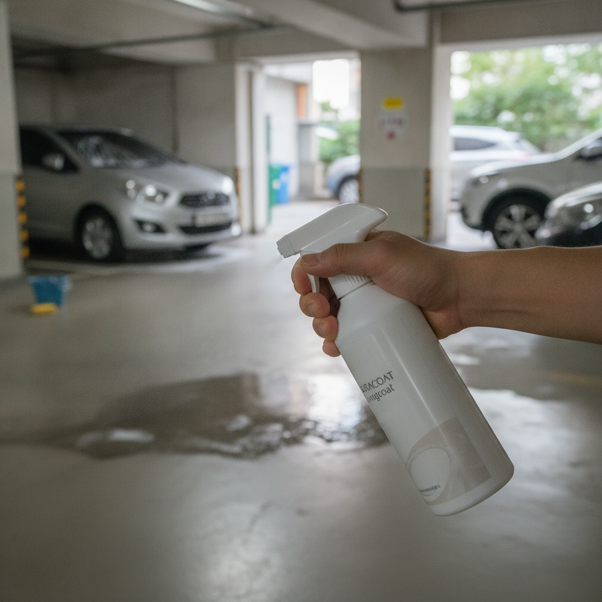
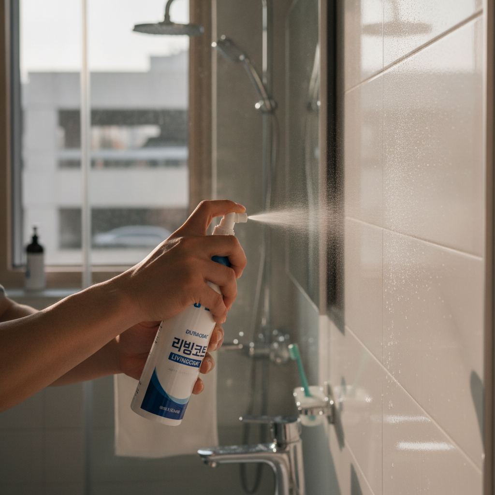
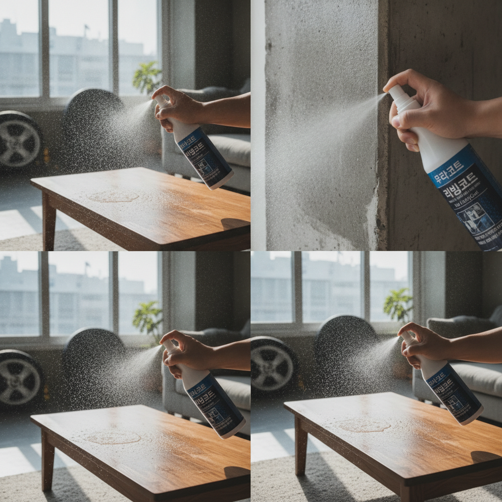
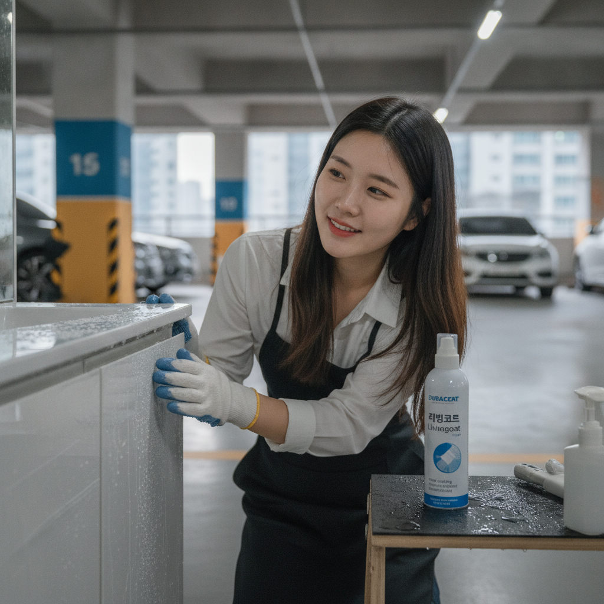

01 매번 물때·얼룩, 청소 힘드셨죠?
주방·욕실·가구 발수 코팅. 자동차/바이크 코팅제와 별개.
매일 쌓이는 물때, 이제 그만 고민하세요! 듀라코트 리빙코트은(는) 리빙코트 전용 유리막 코팅으로, 일상 공간에서 셀프 시공을 부담 없이 시작할 수 있도록 설계되었습니다.
※ 효과는 시공 환경·관리 습관에 따라 달라질 수 있습니다.

02 뿌리기만 해도 물방울이 맺혀요.
'nano coating home surface' 장면에서 리빙코트 사용·효과를 자연스럽게 연출. 듀라코트 리빙코트 전용 + 셀프 시공 가이드

03 쓱 닦으면 끝, 정말 간단해요.

04 우리 집엔 듀라코트 리빙코트.
단기 광택용 왁스와 달리, 유리막 코팅은 표면 위 피막으로 수분·오염 접촉을 줄이는 데 초점을 둡니다.
| 항목 | 내용 |
|---|---|
| 브랜드·라인 | 듀라코트 리빙코트 |
| 스펙 | 주방·욕실·가구 발수 코팅. 자동차/바이크 코팅제와 별개. |
| 용도 | 리빙코트 |
| 특징 | 셀프 시공, 생활 밀착 실사 사용 |
듀라코트·퍼마코트는 영국 수출 실적이 있는 라인입니다.
거실에서 diamond coating technology home 관련 클로즈업. 실제 손·표면·한국 도심·주차·셀프세차 생활감.
시공 후에는 전용 관리 루틴을 권장합니다. 금지 성분·혼용 제품은 안내를 확인하세요.
| 질문 | 답변 |
|---|---|
| 다른 라인과 같나요? | 리빙코트 전용 제품이며, 금지 언급 제품과 혼용하지 않습니다. |
| 셀프로 가능한가요? | 소량 테스트 후 셀프 시공이 가능합니다. 미경험 시 넓은 면적보다 작은 부위부터 권장합니다. |
| 효과가 보장되나요? | 시공 환경·관리·사용 조건에 따라 달라질 수 있습니다. |
듀라코트 · 나눔랩